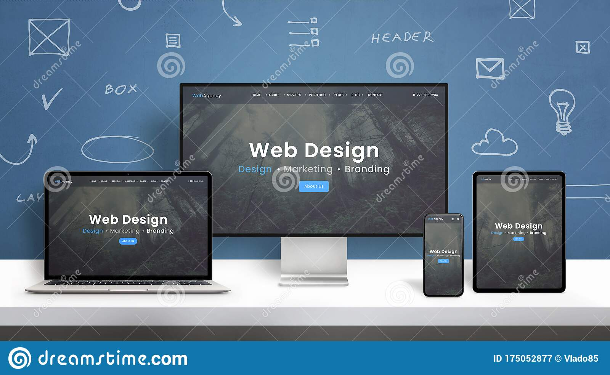
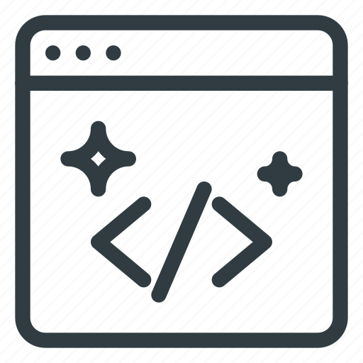

About Me
Hi my name is Ian Otieno, I am a software developer and a UX/UI designer.
I am a graduate from Jomo Kenyatta University of Agriculture and Technology,
holder of bachelors degree of science in Public Administration and Leadership.
I am passionate about web design and development, electronic governance and
Corperate Leadership.
I am currently enrolled at Moringa school BootCamp
remote onboarding to
pursue my role of becoming an expert in web development
and UX/UI design.
My hobbies are coding,travelling and playing computer games.

Responsive Design
Responds to the needs and capability
of the device they are viewed on

web design
responsive visual appealing effect

clean code
easily understandable and readable

ux/ui design
designing patterns that might solve
common problems encountered daily
Dog Care
This is a Dog Care website designed on the 8/11/2021 by
pair programmers Ian Otieno and Faith Nduta.
This is a Dog Care website.It contains all information
a project that we have worked on and the experience gained.
the technologies used are HTML to build the structure of the pages
and CSS to style pages.
Visit the live link to view
Moringa-Letuce-Eat
This is a modern prestigious Moringa letuce eat restaurant
website designed on the 8/11/2021 by Ian Otieno
This is a website that shows designed modern Moringa letuce eat restaurant.
comprises of all information on a project that
I have worked on and the experience gained.
the technologies used are HTML to build the structure of the pages
and CSS to style pages.
Visit the live link to view
Myserviser
This is myserviser website designed on the 10/11/2021
by pair programmers Ian Otieno and Memory Wabwile.
This is a myservicer website.It contains all information
a project that we have worked on and the experience gained.
the technologies used are HTML to build the structure of the pages
and CSS to style pages.
Visit the live link to view
Burger-palace
This is a modern Burger Palace website designed on the 12/11/2021 by Ian Otieno.
This is a website that shows designed modern Burger Palace.It comprises of all
information on a project that I have worked on and the experience gained.
the technologies used are HTML to build the structure of the pages
and CSS to style pages.
Visit the live link to view
.png)